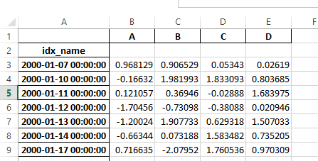
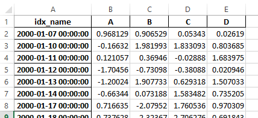

Version 0.17.0 (October 9, 2015)#
This is a major release from 0.16.2 and includes a small number of API changes, several new features, enhancements, and performance improvements along with a large number of bug fixes. We recommend that all users upgrade to this version.
Warning
pandas >= 0.17.0 will no longer support compatibility with Python version 3.2 (GH 9118)
Warning
The pandas.io.data package is deprecated and will be replaced by the
pandas-datareader package.
This will allow the data modules to be independently updated to your pandas
installation. The API for pandas-datareader v0.1.1 is exactly the same
as in pandas v0.17.0 (GH 8961, GH 10861).
After installing pandas-datareader, you can easily change your imports:
from pandas.io import data, wb
becomes
from pandas_datareader import data, wb
Highlights include:
Release the Global Interpreter Lock (GIL) on some cython operations, see here
Plotting methods are now available as attributes of the
.plotaccessor, see hereThe sorting API has been revamped to remove some long-time inconsistencies, see here
Support for a
datetime64[ns]with timezones as a first-class dtype, see hereThe default for
to_datetimewill now be toraisewhen presented with unparsable formats, previously this would return the original input. Also, date parse functions now return consistent results. See hereThe default for
dropnainHDFStorehas changed toFalse, to store by default all rows even if they are allNaN, see hereDatetime accessor (
dt) now supportsSeries.dt.strftimeto generate formatted strings for datetime-likes, andSeries.dt.total_secondsto generate each duration of the timedelta in seconds. See herePeriodandPeriodIndexcan handle multiplied freq like3D, which corresponding to 3 days span. See hereDevelopment installed versions of pandas will now have
PEP440compliant version strings (GH 9518)Development support for benchmarking with the Air Speed Velocity library (GH 8361)
Support for reading SAS xport files, see here
Documentation comparing SAS to pandas, see here
Removal of the automatic TimeSeries broadcasting, deprecated since 0.8.0, see here
Display format with plain text can optionally align with Unicode East Asian Width, see here
Compatibility with Python 3.5 (GH 11097)
Compatibility with matplotlib 1.5.0 (GH 11111)
Check the API Changes and deprecations before updating.
New features#
Datetime with TZ#
We are adding an implementation that natively supports datetime with timezones. A Series or a DataFrame column previously
could be assigned a datetime with timezones, and would work as an object dtype. This had performance issues with a large
number rows. See the docs for more details. (GH 8260, GH 10763, GH 11034).
The new implementation allows for having a single-timezone across all rows, with operations in a performant manner.
In [1]: df = pd.DataFrame(
...: {
...: "A": pd.date_range("20130101", periods=3),
...: "B": pd.date_range("20130101", periods=3, tz="US/Eastern"),
...: "C": pd.date_range("20130101", periods=3, tz="CET"),
...: }
...: )
...:
In [2]: df
Out[2]:
A B C
0 2013-01-01 2013-01-01 00:00:00-05:00 2013-01-01 00:00:00+01:00
1 2013-01-02 2013-01-02 00:00:00-05:00 2013-01-02 00:00:00+01:00
2 2013-01-03 2013-01-03 00:00:00-05:00 2013-01-03 00:00:00+01:00
[3 rows x 3 columns]
In [3]: df.dtypes
Out[3]:
A datetime64[ns]
B datetime64[ns, US/Eastern]
C datetime64[ns, CET]
Length: 3, dtype: object
In [4]: df.B
Out[4]:
0 2013-01-01 00:00:00-05:00
1 2013-01-02 00:00:00-05:00
2 2013-01-03 00:00:00-05:00
Name: B, Length: 3, dtype: datetime64[ns, US/Eastern]
In [5]: df.B.dt.tz_localize(None)
Out[5]:
0 2013-01-01
1 2013-01-02
2 2013-01-03
Name: B, Length: 3, dtype: datetime64[ns]
This uses a new-dtype representation as well, that is very similar in look-and-feel to its numpy cousin datetime64[ns]
In [6]: df["B"].dtype
Out[6]: datetime64[ns, US/Eastern]
In [7]: type(df["B"].dtype)
Out[7]: pandas.core.dtypes.dtypes.DatetimeTZDtype
Note
There is a slightly different string repr for the underlying DatetimeIndex as a result of the dtype changes, but
functionally these are the same.
Previous behavior:
In [1]: pd.date_range('20130101', periods=3, tz='US/Eastern')
Out[1]: DatetimeIndex(['2013-01-01 00:00:00-05:00', '2013-01-02 00:00:00-05:00',
'2013-01-03 00:00:00-05:00'],
dtype='datetime64[ns]', freq='D', tz='US/Eastern')
In [2]: pd.date_range('20130101', periods=3, tz='US/Eastern').dtype
Out[2]: dtype('<M8[ns]')
New behavior:
In [8]: pd.date_range("20130101", periods=3, tz="US/Eastern")
Out[8]:
DatetimeIndex(['2013-01-01 00:00:00-05:00', '2013-01-02 00:00:00-05:00',
'2013-01-03 00:00:00-05:00'],
dtype='datetime64[ns, US/Eastern]', freq='D')
In [9]: pd.date_range("20130101", periods=3, tz="US/Eastern").dtype
Out[9]: datetime64[ns, US/Eastern]
Releasing the GIL#
We are releasing the global-interpreter-lock (GIL) on some cython operations.
This will allow other threads to run simultaneously during computation, potentially allowing performance improvements
from multi-threading. Notably groupby, nsmallest, value_counts and some indexing operations benefit from this. (GH 8882)
For example the groupby expression in the following code will have the GIL released during the factorization step, e.g. df.groupby('key')
as well as the .sum() operation.
N = 1000000
ngroups = 10
df = DataFrame(
{"key": np.random.randint(0, ngroups, size=N), "data": np.random.randn(N)}
)
df.groupby("key")["data"].sum()
Releasing of the GIL could benefit an application that uses threads for user interactions (e.g. QT), or performing multi-threaded computations. A nice example of a library that can handle these types of computation-in-parallel is the dask library.
Plot submethods#
The Series and DataFrame .plot() method allows for customizing plot types by supplying the kind keyword arguments. Unfortunately, many of these kinds of plots use different required and optional keyword arguments, which makes it difficult to discover what any given plot kind uses out of the dozens of possible arguments.
To alleviate this issue, we have added a new, optional plotting interface, which exposes each kind of plot as a method of the .plot attribute. Instead of writing series.plot(kind=<kind>, ...), you can now also use series.plot.<kind>(...):
In [10]: df = pd.DataFrame(np.random.rand(10, 2), columns=['a', 'b'])
In [11]: df.plot.bar()
As a result of this change, these methods are now all discoverable via tab-completion:
In [12]: df.plot.<TAB> # noqa: E225, E999
df.plot.area df.plot.barh df.plot.density df.plot.hist df.plot.line df.plot.scatter
df.plot.bar df.plot.box df.plot.hexbin df.plot.kde df.plot.pie
Each method signature only includes relevant arguments. Currently, these are limited to required arguments, but in the future these will include optional arguments, as well. For an overview, see the new Plotting API documentation.
Additional methods for dt accessor#
Series.dt.strftime#
We are now supporting a Series.dt.strftime method for datetime-likes to generate a formatted string (GH 10110). Examples:
# DatetimeIndex
In [13]: s = pd.Series(pd.date_range("20130101", periods=4))
In [14]: s
Out[14]:
0 2013-01-01
1 2013-01-02
2 2013-01-03
3 2013-01-04
Length: 4, dtype: datetime64[ns]
In [15]: s.dt.strftime("%Y/%m/%d")
Out[15]:
0 2013/01/01
1 2013/01/02
2 2013/01/03
3 2013/01/04
Length: 4, dtype: object
# PeriodIndex
In [16]: s = pd.Series(pd.period_range("20130101", periods=4))
In [17]: s
Out[17]:
0 2013-01-01
1 2013-01-02
2 2013-01-03
3 2013-01-04
Length: 4, dtype: period[D]
In [18]: s.dt.strftime("%Y/%m/%d")
Out[18]:
0 2013/01/01
1 2013/01/02
2 2013/01/03
3 2013/01/04
Length: 4, dtype: object
The string format is as the python standard library and details can be found here
Series.dt.total_seconds#
pd.Series of type timedelta64 has new method .dt.total_seconds() returning the duration of the timedelta in seconds (GH 10817)
# TimedeltaIndex
In [19]: s = pd.Series(pd.timedelta_range("1 minutes", periods=4))
In [20]: s
Out[20]:
0 0 days 00:01:00
1 1 days 00:01:00
2 2 days 00:01:00
3 3 days 00:01:00
Length: 4, dtype: timedelta64[ns]
In [21]: s.dt.total_seconds()
Out[21]:
0 60.0
1 86460.0
2 172860.0
3 259260.0
Length: 4, dtype: float64
Period frequency enhancement#
Period, PeriodIndex and period_range can now accept multiplied freq. Also, Period.freq and PeriodIndex.freq are now stored as a DateOffset instance like DatetimeIndex, and not as str (GH 7811)
A multiplied freq represents a span of corresponding length. The example below creates a period of 3 days. Addition and subtraction will shift the period by its span.
In [22]: p = pd.Period("2015-08-01", freq="3D")
In [23]: p
Out[23]: Period('2015-08-01', '3D')
In [24]: p + 1
Out[24]: Period('2015-08-04', '3D')
In [25]: p - 2
Out[25]: Period('2015-07-26', '3D')
In [26]: p.to_timestamp()
Out[26]: Timestamp('2015-08-01 00:00:00')
In [27]: p.to_timestamp(how="E")
Out[27]: Timestamp('2015-08-03 23:59:59.999999999')
You can use the multiplied freq in PeriodIndex and period_range.
In [28]: idx = pd.period_range("2015-08-01", periods=4, freq="2D")
In [29]: idx
Out[29]: PeriodIndex(['2015-08-01', '2015-08-03', '2015-08-05', '2015-08-07'], dtype='period[2D]')
In [30]: idx + 1
Out[30]: PeriodIndex(['2015-08-03', '2015-08-05', '2015-08-07', '2015-08-09'], dtype='period[2D]')
Support for SAS XPORT files#
read_sas() provides support for reading SAS XPORT format files. (GH 4052).
df = pd.read_sas("sas_xport.xpt")
It is also possible to obtain an iterator and read an XPORT file incrementally.
for df in pd.read_sas("sas_xport.xpt", chunksize=10000):
do_something(df)
See the docs for more details.
Support for math functions in .eval()#
eval() now supports calling math functions (GH 4893)
df = pd.DataFrame({"a": np.random.randn(10)})
df.eval("b = sin(a)")
The support math functions are sin, cos, exp, log, expm1, log1p,
sqrt, sinh, cosh, tanh, arcsin, arccos, arctan, arccosh,
arcsinh, arctanh, abs and arctan2.
These functions map to the intrinsics for the NumExpr engine. For the Python
engine, they are mapped to NumPy calls.
Changes to Excel with MultiIndex#
In version 0.16.2 a DataFrame with MultiIndex columns could not be written to Excel via to_excel.
That functionality has been added (GH 10564), along with updating read_excel so that the data can
be read back with, no loss of information, by specifying which columns/rows make up the MultiIndex
in the header and index_col parameters (GH 4679)
See the documentation for more details.
In [31]: df = pd.DataFrame(
....: [[1, 2, 3, 4], [5, 6, 7, 8]],
....: columns=pd.MultiIndex.from_product(
....: [["foo", "bar"], ["a", "b"]], names=["col1", "col2"]
....: ),
....: index=pd.MultiIndex.from_product([["j"], ["l", "k"]], names=["i1", "i2"]),
....: )
....:
In [32]: df
Out[32]:
col1 foo bar
col2 a b a b
i1 i2
j l 1 2 3 4
k 5 6 7 8
[2 rows x 4 columns]
In [33]: df.to_excel("test.xlsx")
In [34]: df = pd.read_excel("test.xlsx", header=[0, 1], index_col=[0, 1])
In [35]: df
Out[35]:
col1 foo bar
col2 a b a b
i1 i2
j l 1 2 3 4
k 5 6 7 8
[2 rows x 4 columns]
Previously, it was necessary to specify the has_index_names argument in read_excel,
if the serialized data had index names. For version 0.17.0 the output format of to_excel
has been changed to make this keyword unnecessary - the change is shown below.
Old
New
Warning
Excel files saved in version 0.16.2 or prior that had index names will still able to be read in,
but the has_index_names argument must specified to True.
Google BigQuery enhancements#
Added ability to automatically create a table/dataset using the
pandas.io.gbq.to_gbq()function if the destination table/dataset does not exist. (GH 8325, GH 11121).Added ability to replace an existing table and schema when calling the
pandas.io.gbq.to_gbq()function via theif_existsargument. See the docs for more details (GH 8325).InvalidColumnOrderandInvalidPageTokenin the gbq module will raiseValueErrorinstead ofIOError.The
generate_bq_schema()function is now deprecated and will be removed in a future version (GH 11121)The gbq module will now support Python 3 (GH 11094).
Display alignment with Unicode East Asian width#
Warning
Enabling this option will affect the performance for printing of DataFrame and Series (about 2 times slower).
Use only when it is actually required.
Some East Asian countries use Unicode characters its width is corresponding to 2 alphabets. If a DataFrame or Series contains these characters, the default output cannot be aligned properly. The following options are added to enable precise handling for these characters.
display.unicode.east_asian_width: Whether to use the Unicode East Asian Width to calculate the display text width. (GH 2612)display.unicode.ambiguous_as_wide: Whether to handle Unicode characters belong to Ambiguous as Wide. (GH 11102)
In [36]: df = pd.DataFrame({u"国籍": ["UK", u"日本"], u"名前": ["Alice", u"しのぶ"]})
In [37]: df
Out[37]:
国籍 名前
0 UK Alice
1 日本 しのぶ
[2 rows x 2 columns]
In [38]: pd.set_option("display.unicode.east_asian_width", True)
In [39]: df
Out[39]:
国籍 名前
0 UK Alice
1 日本 しのぶ
[2 rows x 2 columns]
For further details, see here
Other enhancements#
Support for
openpyxl>= 2.2. The API for style support is now stable (GH 10125)mergenow accepts the argumentindicatorwhich adds a Categorical-type column (by default called_merge) to the output object that takes on the values (GH 8790)Observation Origin
_mergevalueMerge key only in
'left'frameleft_onlyMerge key only in
'right'frameright_onlyMerge key in both frames
bothIn [40]: df1 = pd.DataFrame({"col1": [0, 1], "col_left": ["a", "b"]}) In [41]: df2 = pd.DataFrame({"col1": [1, 2, 2], "col_right": [2, 2, 2]}) In [42]: pd.merge(df1, df2, on="col1", how="outer", indicator=True) Out[42]: col1 col_left col_right _merge 0 0 a NaN left_only 1 1 b 2.0 both 2 2 NaN 2.0 right_only 3 2 NaN 2.0 right_only [4 rows x 4 columns]
For more, see the updated docs
pd.to_numericis a new function to coerce strings to numbers (possibly with coercion) (GH 11133)pd.mergewill now allow duplicate column names if they are not merged upon (GH 10639).pd.pivotwill now allow passing index asNone(GH 3962).pd.concatwill now use existing Series names if provided (GH 10698).In [43]: foo = pd.Series([1, 2], name="foo") In [44]: bar = pd.Series([1, 2]) In [45]: baz = pd.Series([4, 5])
Previous behavior:
In [1]: pd.concat([foo, bar, baz], axis=1) Out[1]: 0 1 2 0 1 1 4 1 2 2 5
New behavior:
In [46]: pd.concat([foo, bar, baz], axis=1) Out[46]: foo 0 1 0 1 1 4 1 2 2 5 [2 rows x 3 columns]
DataFramehas gained thenlargestandnsmallestmethods (GH 10393)Add a
limit_directionkeyword argument that works withlimitto enableinterpolateto fillNaNvalues forward, backward, or both (GH 9218, GH 10420, GH 11115)In [47]: ser = pd.Series([np.nan, np.nan, 5, np.nan, np.nan, np.nan, 13]) In [48]: ser.interpolate(limit=1, limit_direction="both") Out[48]: 0 NaN 1 5.0 2 5.0 3 7.0 4 NaN 5 11.0 6 13.0 Length: 7, dtype: float64
Added a
DataFrame.roundmethod to round the values to a variable number of decimal places (GH 10568).In [49]: df = pd.DataFrame( ....: np.random.random([3, 3]), ....: columns=["A", "B", "C"], ....: index=["first", "second", "third"], ....: ) ....: In [50]: df Out[50]: A B C first 0.126970 0.966718 0.260476 second 0.897237 0.376750 0.336222 third 0.451376 0.840255 0.123102 [3 rows x 3 columns] In [51]: df.round(2) Out[51]: A B C first 0.13 0.97 0.26 second 0.90 0.38 0.34 third 0.45 0.84 0.12 [3 rows x 3 columns] In [52]: df.round({"A": 0, "C": 2}) Out[52]: A B C first 0.0 0.966718 0.26 second 1.0 0.376750 0.34 third 0.0 0.840255 0.12 [3 rows x 3 columns]
drop_duplicatesandduplicatednow accept akeepkeyword to target first, last, and all duplicates. Thetake_lastkeyword is deprecated, see here (GH 6511, GH 8505)In [53]: s = pd.Series(["A", "B", "C", "A", "B", "D"]) In [54]: s.drop_duplicates() Out[54]: 0 A 1 B 2 C 5 D Length: 4, dtype: object In [55]: s.drop_duplicates(keep="last") Out[55]: 2 C 3 A 4 B 5 D Length: 4, dtype: object In [56]: s.drop_duplicates(keep=False) Out[56]: 2 C 5 D Length: 2, dtype: object
Reindex now has a
toleranceargument that allows for finer control of Limits on filling while reindexing (GH 10411):In [57]: df = pd.DataFrame({"x": range(5), "t": pd.date_range("2000-01-01", periods=5)}) In [58]: df.reindex([0.1, 1.9, 3.5], method="nearest", tolerance=0.2) Out[58]: x t 0.1 0.0 2000-01-01 1.9 2.0 2000-01-03 3.5 NaN NaT [3 rows x 2 columns]
When used on a
DatetimeIndex,TimedeltaIndexorPeriodIndex,tolerancewill coerced into aTimedeltaif possible. This allows you to specify tolerance with a string:In [59]: df = df.set_index("t") In [60]: df.reindex(pd.to_datetime(["1999-12-31"]), method="nearest", tolerance="1 day") Out[60]: x 1999-12-31 0 [1 rows x 1 columns]
toleranceis also exposed by the lower levelIndex.get_indexerandIndex.get_locmethods.Added functionality to use the
baseargument when resampling aTimeDeltaIndex(GH 10530)DatetimeIndexcan be instantiated using strings containsNaT(GH 7599)to_datetimecan now accept theyearfirstkeyword (GH 7599)pandas.tseries.offsetslarger than theDayoffset can now be used with aSeriesfor addition/subtraction (GH 10699). See the docs for more details.pd.Timedelta.total_seconds()now returns Timedelta duration to ns precision (previously microsecond precision) (GH 10939)PeriodIndexnow supports arithmetic withnp.ndarray(GH 10638)Support pickling of
Periodobjects (GH 10439).as_blockswill now take acopyoptional argument to return a copy of the data, default is to copy (no change in behavior from prior versions), (GH 9607)regexargument toDataFrame.filternow handles numeric column names instead of raisingValueError(GH 10384).Enable reading gzip compressed files via URL, either by explicitly setting the compression parameter or by inferring from the presence of the HTTP Content-Encoding header in the response (GH 8685)
Enable writing Excel files in memory using StringIO/BytesIO (GH 7074)
Enable serialization of lists and dicts to strings in
ExcelWriter(GH 8188)SQL io functions now accept a SQLAlchemy connectable. (GH 7877)
pd.read_sqlandto_sqlcan accept database URI asconparameter (GH 10214)read_sql_tablewill now allow reading from views (GH 10750).Enable writing complex values to
HDFStoreswhen using thetableformat (GH 10447)Enable
pd.read_hdfto be used without specifying a key when the HDF file contains a single dataset (GH 10443)pd.read_statawill now read Stata 118 type files. (GH 9882)msgpacksubmodule has been updated to 0.4.6 with backward compatibility (GH 10581)DataFrame.to_dictnow acceptsorient='index'keyword argument (GH 10844).DataFrame.applywill return a Series of dicts if the passed function returns a dict andreduce=True(GH 8735).Allow passing
kwargsto the interpolation methods (GH 10378).Improved error message when concatenating an empty iterable of
Dataframeobjects (GH 9157)pd.read_csvcan now read bz2-compressed files incrementally, and the C parser can read bz2-compressed files from AWS S3 (GH 11070, GH 11072).In
pd.read_csv, recognizes3n://ands3a://URLs as designating S3 file storage (GH 11070, GH 11071).Read CSV files from AWS S3 incrementally, instead of first downloading the entire file. (Full file download still required for compressed files in Python 2.) (GH 11070, GH 11073)
pd.read_csvis now able to infer compression type for files read from AWS S3 storage (GH 11070, GH 11074).
Backwards incompatible API changes#
Changes to sorting API#
The sorting API has had some longtime inconsistencies. (GH 9816, GH 8239).
Here is a summary of the API PRIOR to 0.17.0:
Series.sortis INPLACE whileDataFrame.sortreturns a new object.Series.orderreturns a new objectIt was possible to use
Series/DataFrame.sort_indexto sort by values by passing thebykeyword.Series/DataFrame.sortlevelworked only on aMultiIndexfor sorting by index.
To address these issues, we have revamped the API:
We have introduced a new method,
DataFrame.sort_values(), which is the merger ofDataFrame.sort(),Series.sort(), andSeries.order(), to handle sorting of values.The existing methods
Series.sort(),Series.order(), andDataFrame.sort()have been deprecated and will be removed in a future version.The
byargument ofDataFrame.sort_index()has been deprecated and will be removed in a future version.The existing method
.sort_index()will gain thelevelkeyword to enable level sorting.
We now have two distinct and non-overlapping methods of sorting. A * marks items that
will show a FutureWarning.
To sort by the values:
Previous |
Replacement |
|---|---|
* |
|
* |
|
* |
|
To sort by the index:
Previous |
Replacement |
|---|---|
|
|
|
|
|
|
|
|
* |
|
We have also deprecated and changed similar methods in two Series-like classes, Index and Categorical.
Previous |
Replacement |
|---|---|
* |
|
* |
|
Changes to to_datetime and to_timedelta#
Error handling#
The default for pd.to_datetime error handling has changed to errors='raise'.
In prior versions it was errors='ignore'. Furthermore, the coerce argument
has been deprecated in favor of errors='coerce'. This means that invalid parsing
will raise rather that return the original input as in previous versions. (GH 10636)
Previous behavior:
In [2]: pd.to_datetime(['2009-07-31', 'asd'])
Out[2]: array(['2009-07-31', 'asd'], dtype=object)
New behavior:
In [3]: pd.to_datetime(['2009-07-31', 'asd'])
ValueError: Unknown string format
Of course you can coerce this as well.
In [61]: pd.to_datetime(["2009-07-31", "asd"], errors="coerce")
Out[61]: DatetimeIndex(['2009-07-31', 'NaT'], dtype='datetime64[ns]', freq=None)
To keep the previous behavior, you can use errors='ignore':
In [4]: pd.to_datetime(["2009-07-31", "asd"], errors="ignore")
Out[4]: Index(['2009-07-31', 'asd'], dtype='object')
Furthermore, pd.to_timedelta has gained a similar API, of errors='raise'|'ignore'|'coerce', and the coerce keyword
has been deprecated in favor of errors='coerce'.
Consistent parsing#
The string parsing of to_datetime, Timestamp and DatetimeIndex has
been made consistent. (GH 7599)
Prior to v0.17.0, Timestamp and to_datetime may parse year-only datetime-string incorrectly using today’s date, otherwise DatetimeIndex
uses the beginning of the year. Timestamp and to_datetime may raise ValueError in some types of datetime-string which DatetimeIndex
can parse, such as a quarterly string.
Previous behavior:
In [1]: pd.Timestamp('2012Q2')
Traceback
...
ValueError: Unable to parse 2012Q2
# Results in today's date.
In [2]: pd.Timestamp('2014')
Out [2]: 2014-08-12 00:00:00
v0.17.0 can parse them as below. It works on DatetimeIndex also.
New behavior:
In [62]: pd.Timestamp("2012Q2")
Out[62]: Timestamp('2012-04-01 00:00:00')
In [63]: pd.Timestamp("2014")
Out[63]: Timestamp('2014-01-01 00:00:00')
In [64]: pd.DatetimeIndex(["2012Q2", "2014"])
Out[64]: DatetimeIndex(['2012-04-01', '2014-01-01'], dtype='datetime64[ns]', freq=None)
Note
If you want to perform calculations based on today’s date, use Timestamp.now() and pandas.tseries.offsets.
In [65]: import pandas.tseries.offsets as offsets
In [66]: pd.Timestamp.now()
Out[66]: Timestamp('2024-09-20 12:30:23.176994')
In [67]: pd.Timestamp.now() + offsets.DateOffset(years=1)
Out[67]: Timestamp('2025-09-20 12:30:23.177749')
Changes to Index comparisons#
Operator equal on Index should behavior similarly to Series (GH 9947, GH 10637)
Starting in v0.17.0, comparing Index objects of different lengths will raise
a ValueError. This is to be consistent with the behavior of Series.
Previous behavior:
In [2]: pd.Index([1, 2, 3]) == pd.Index([1, 4, 5])
Out[2]: array([ True, False, False], dtype=bool)
In [3]: pd.Index([1, 2, 3]) == pd.Index([2])
Out[3]: array([False, True, False], dtype=bool)
In [4]: pd.Index([1, 2, 3]) == pd.Index([1, 2])
Out[4]: False
New behavior:
In [8]: pd.Index([1, 2, 3]) == pd.Index([1, 4, 5])
Out[8]: array([ True, False, False], dtype=bool)
In [9]: pd.Index([1, 2, 3]) == pd.Index([2])
ValueError: Lengths must match to compare
In [10]: pd.Index([1, 2, 3]) == pd.Index([1, 2])
ValueError: Lengths must match to compare
Note that this is different from the numpy behavior where a comparison can
be broadcast:
In [68]: np.array([1, 2, 3]) == np.array([1])
Out[68]: array([ True, False, False])
or it can return False if broadcasting can not be done:
In [11]: np.array([1, 2, 3]) == np.array([1, 2])
Out[11]: False
Changes to boolean comparisons vs. None#
Boolean comparisons of a Series vs None will now be equivalent to comparing with np.nan, rather than raise TypeError. (GH 1079).
In [69]: s = pd.Series(range(3), dtype="float")
In [70]: s.iloc[1] = None
In [71]: s
Out[71]:
0 0.0
1 NaN
2 2.0
Length: 3, dtype: float64
Previous behavior:
In [5]: s == None
TypeError: Could not compare <type 'NoneType'> type with Series
New behavior:
In [72]: s == None
Out[72]:
0 False
1 False
2 False
Length: 3, dtype: bool
Usually you simply want to know which values are null.
In [73]: s.isnull()
Out[73]:
0 False
1 True
2 False
Length: 3, dtype: bool
Warning
You generally will want to use isnull/notnull for these types of comparisons, as isnull/notnull tells you which elements are null. One has to be
mindful that nan's don’t compare equal, but None's do. Note that pandas/numpy uses the fact that np.nan != np.nan, and treats None like np.nan.
In [74]: None == None
Out[74]: True
In [75]: np.nan == np.nan
Out[75]: False
HDFStore dropna behavior#
The default behavior for HDFStore write functions with format='table' is now to keep rows that are all missing. Previously, the behavior was to drop rows that were all missing save the index. The previous behavior can be replicated using the dropna=True option. (GH 9382)
Previous behavior:
In [76]: df_with_missing = pd.DataFrame(
....: {"col1": [0, np.nan, 2], "col2": [1, np.nan, np.nan]}
....: )
....:
In [77]: df_with_missing
Out[77]:
col1 col2
0 0.0 1.0
1 NaN NaN
2 2.0 NaN
[3 rows x 2 columns]
In [27]:
df_with_missing.to_hdf('file.h5',
key='df_with_missing',
format='table',
mode='w')
In [28]: pd.read_hdf('file.h5', 'df_with_missing')
Out [28]:
col1 col2
0 0 1
2 2 NaN
New behavior:
In [78]: df_with_missing.to_hdf("file.h5", key="df_with_missing", format="table", mode="w")
In [79]: pd.read_hdf("file.h5", "df_with_missing")
Out[79]:
col1 col2
0 0.0 1.0
1 NaN NaN
2 2.0 NaN
[3 rows x 2 columns]
See the docs for more details.
Changes to display.precision option#
The display.precision option has been clarified to refer to decimal places (GH 10451).
Earlier versions of pandas would format floating point numbers to have one less decimal place than the value in
display.precision.
In [1]: pd.set_option('display.precision', 2)
In [2]: pd.DataFrame({'x': [123.456789]})
Out[2]:
x
0 123.5
If interpreting precision as “significant figures” this did work for scientific notation but that same interpretation did not work for values with standard formatting. It was also out of step with how numpy handles formatting.
Going forward the value of display.precision will directly control the number of places after the decimal, for
regular formatting as well as scientific notation, similar to how numpy’s precision print option works.
In [80]: pd.set_option("display.precision", 2)
In [81]: pd.DataFrame({"x": [123.456789]})
Out[81]:
x
0 123.46
[1 rows x 1 columns]
To preserve output behavior with prior versions the default value of display.precision has been reduced to 6
from 7.
Changes to Categorical.unique#
Categorical.unique now returns new Categoricals with categories and codes that are unique, rather than returning np.array (GH 10508)
unordered category: values and categories are sorted by appearance order.
ordered category: values are sorted by appearance order, categories keep existing order.
In [82]: cat = pd.Categorical(["C", "A", "B", "C"], categories=["A", "B", "C"], ordered=True)
In [83]: cat
Out[83]:
['C', 'A', 'B', 'C']
Categories (3, object): ['A' < 'B' < 'C']
In [84]: cat.unique()
Out[84]:
['C', 'A', 'B']
Categories (3, object): ['A' < 'B' < 'C']
In [85]: cat = pd.Categorical(["C", "A", "B", "C"], categories=["A", "B", "C"])
In [86]: cat
Out[86]:
['C', 'A', 'B', 'C']
Categories (3, object): ['A', 'B', 'C']
In [87]: cat.unique()
Out[87]:
['C', 'A', 'B']
Categories (3, object): ['A', 'B', 'C']
Changes to bool passed as header in parsers#
In earlier versions of pandas, if a bool was passed the header argument of
read_csv, read_excel, or read_html it was implicitly converted to
an integer, resulting in header=0 for False and header=1 for True
(GH 6113)
A bool input to header will now raise a TypeError
In [29]: df = pd.read_csv('data.csv', header=False)
TypeError: Passing a bool to header is invalid. Use header=None for no header or
header=int or list-like of ints to specify the row(s) making up the column names
Other API changes#
Line and kde plot with
subplots=Truenow uses default colors, not all black. Specifycolor='k'to draw all lines in black (GH 9894)Calling the
.value_counts()method on a Series with acategoricaldtype now returns a Series with aCategoricalIndex(GH 10704)The metadata properties of subclasses of pandas objects will now be serialized (GH 10553).
groupbyusingCategoricalfollows the same rule asCategorical.uniquedescribed above (GH 10508)When constructing
DataFramewith an array ofcomplex64dtype previously meant the corresponding column was automatically promoted to thecomplex128dtype. pandas will now preserve the itemsize of the input for complex data (GH 10952)some numeric reduction operators would return
ValueError, rather thanTypeErroron object types that includes strings and numbers (GH 11131)Passing currently unsupported
chunksizeargument toread_excelorExcelFile.parsewill now raiseNotImplementedError(GH 8011)Allow an
ExcelFileobject to be passed intoread_excel(GH 11198)DatetimeIndex.uniondoes not inferfreqifselfand the input haveNoneasfreq(GH 11086)NaT’s methods now either raiseValueError, or returnnp.nanorNaT(GH 9513)Behavior
Methods
return
np.nanweekday,isoweekdayreturn
NaTdate,now,replace,to_datetime,todayreturn
np.datetime64('NaT')to_datetime64(unchanged)raise
ValueErrorAll other public methods (names not beginning with underscores)
Deprecations#
For
Seriesthe following indexing functions are deprecated (GH 10177).Deprecated Function
Replacement
.irow(i).iloc[i]or.iat[i].iget(i).iloc[i]or.iat[i].iget_value(i).iloc[i]or.iat[i]For
DataFramethe following indexing functions are deprecated (GH 10177).Deprecated Function
Replacement
.irow(i).iloc[i].iget_value(i, j).iloc[i, j]or.iat[i, j].icol(j).iloc[:, j]
Note
These indexing function have been deprecated in the documentation since 0.11.0.
Categorical.namewas deprecated to makeCategoricalmorenumpy.ndarraylike. UseSeries(cat, name="whatever")instead (GH 10482).Setting missing values (NaN) in a
Categorical’scategorieswill issue a warning (GH 10748). You can still have missing values in thevalues.drop_duplicatesandduplicated’stake_lastkeyword was deprecated in favor ofkeep. (GH 6511, GH 8505)Series.nsmallestandnlargest’stake_lastkeyword was deprecated in favor ofkeep. (GH 10792)DataFrame.combineAddandDataFrame.combineMultare deprecated. They can easily be replaced by using theaddandmulmethods:DataFrame.add(other, fill_value=0)andDataFrame.mul(other, fill_value=1.)(GH 10735).TimeSeriesdeprecated in favor ofSeries(note that this has been an alias since 0.13.0), (GH 10890)SparsePaneldeprecated and will be removed in a future version (GH 11157).Series.is_time_seriesdeprecated in favor ofSeries.index.is_all_dates(GH 11135)Legacy offsets (like
'A@JAN') are deprecated (note that this has been alias since 0.8.0) (GH 10878)WidePaneldeprecated in favor ofPanel,LongPanelin favor ofDataFrame(note these have been aliases since < 0.11.0), (GH 10892)DataFrame.convert_objectshas been deprecated in favor of type-specific functionspd.to_datetime,pd.to_timestampandpd.to_numeric(new in 0.17.0) (GH 11133).
Removal of prior version deprecations/changes#
Removal of
na_lastparameters fromSeries.order()andSeries.sort(), in favor ofna_position. (GH 5231)Remove of
percentile_widthfrom.describe(), in favor ofpercentiles. (GH 7088)Removal of
colSpaceparameter fromDataFrame.to_string(), in favor ofcol_space, circa 0.8.0 version.Removal of automatic time-series broadcasting (GH 2304)
In [88]: np.random.seed(1234) In [89]: df = pd.DataFrame( ....: np.random.randn(5, 2), ....: columns=list("AB"), ....: index=pd.date_range("2013-01-01", periods=5), ....: ) ....: In [90]: df Out[90]: A B 2013-01-01 0.471435 -1.190976 2013-01-02 1.432707 -0.312652 2013-01-03 -0.720589 0.887163 2013-01-04 0.859588 -0.636524 2013-01-05 0.015696 -2.242685 [5 rows x 2 columns]
Previously
In [3]: df + df.A FutureWarning: TimeSeries broadcasting along DataFrame index by default is deprecated. Please use DataFrame.<op> to explicitly broadcast arithmetic operations along the index Out[3]: A B 2013-01-01 0.942870 -0.719541 2013-01-02 2.865414 1.120055 2013-01-03 -1.441177 0.166574 2013-01-04 1.719177 0.223065 2013-01-05 0.031393 -2.226989
Current
In [91]: df.add(df.A, axis="index") Out[91]: A B 2013-01-01 0.942870 -0.719541 2013-01-02 2.865414 1.120055 2013-01-03 -1.441177 0.166574 2013-01-04 1.719177 0.223065 2013-01-05 0.031393 -2.226989 [5 rows x 2 columns]
Remove
tablekeyword inHDFStore.put/append, in favor of usingformat=(GH 4645)Remove
kindinread_excel/ExcelFileas its unused (GH 4712)Remove
infer_typekeyword frompd.read_htmlas its unused (GH 4770, GH 7032)Remove
offsetandtimeRulekeywords fromSeries.tshift/shift, in favor offreq(GH 4853, GH 4864)Remove
pd.load/pd.savealiases in favor ofpd.to_pickle/pd.read_pickle(GH 3787)
Performance improvements#
Development support for benchmarking with the Air Speed Velocity library (GH 8361)
Added vbench benchmarks for alternative ExcelWriter engines and reading Excel files (GH 7171)
Performance improvements in
Categorical.value_counts(GH 10804)Performance improvements in
SeriesGroupBy.nuniqueandSeriesGroupBy.value_countsandSeriesGroupby.transform(GH 10820, GH 11077)Performance improvements in
DataFrame.drop_duplicateswith integer dtypes (GH 10917)Performance improvements in
DataFrame.duplicatedwith wide frames. (GH 10161, GH 11180)4x improvement in
timedeltastring parsing (GH 6755, GH 10426)8x improvement in
timedelta64anddatetime64ops (GH 6755)Significantly improved performance of indexing
MultiIndexwith slicers (GH 10287)8x improvement in
ilocusing list-like input (GH 10791)Improved performance of
Series.isinfor datetimelike/integer Series (GH 10287)20x improvement in
concatof Categoricals when categories are identical (GH 10587)Improved performance of
to_datetimewhen specified format string is ISO8601 (GH 10178)2x improvement of
Series.value_countsfor float dtype (GH 10821)Enable
infer_datetime_formatinto_datetimewhen date components do not have 0 padding (GH 11142)Regression from 0.16.1 in constructing
DataFramefrom nested dictionary (GH 11084)Performance improvements in addition/subtraction operations for
DateOffsetwithSeriesorDatetimeIndex(GH 10744, GH 11205)
Bug fixes#
Bug in incorrect computation of
.mean()ontimedelta64[ns]because of overflow (GH 9442)Bug in
.isinon older numpies (GH 11232)Bug in
DataFrame.to_html(index=False)renders unnecessarynamerow (GH 10344)Bug in
DataFrame.to_latex()thecolumn_formatargument could not be passed (GH 9402)Bug in
DatetimeIndexwhen localizing withNaT(GH 10477)Bug in
Series.dtops in preserving meta-data (GH 10477)Bug in preserving
NaTwhen passed in an otherwise invalidto_datetimeconstruction (GH 10477)Bug in
DataFrame.applywhen function returns categorical series. (GH 9573)Bug in
to_datetimewith invalid dates and formats supplied (GH 10154)Bug in
Index.drop_duplicatesdropping name(s) (GH 10115)Bug in
Series.quantiledropping name (GH 10881)Bug in
pd.Serieswhen setting a value on an emptySerieswhose index has a frequency. (GH 10193)Bug in
pd.Series.interpolatewith invalidorderkeyword values. (GH 10633)Bug in
DataFrame.plotraisesValueErrorwhen color name is specified by multiple characters (GH 10387)Bug in
Indexconstruction with a mixed list of tuples (GH 10697)Bug in
DataFrame.reset_indexwhen index containsNaT. (GH 10388)Bug in
ExcelReaderwhen worksheet is empty (GH 6403)Bug in
BinGrouper.group_infowhere returned values are not compatible with base class (GH 10914)Bug in clearing the cache on
DataFrame.popand a subsequent inplace op (GH 10912)Bug in indexing with a mixed-integer
Indexcausing anImportError(GH 10610)Bug in
Series.countwhen index has nulls (GH 10946)Bug in pickling of a non-regular freq
DatetimeIndex(GH 11002)Bug causing
DataFrame.whereto not respect theaxisparameter when the frame has a symmetric shape. (GH 9736)Bug in
Table.select_columnwhere name is not preserved (GH 10392)Bug in
offsets.generate_rangewherestartandendhave finer precision thanoffset(GH 9907)Bug in
pd.rolling_*whereSeries.namewould be lost in the output (GH 10565)Bug in
stackwhen index or columns are not unique. (GH 10417)Bug in setting a
Panelwhen an axis has a MultiIndex (GH 10360)Bug in
USFederalHolidayCalendarwhereUSMemorialDayandUSMartinLutherKingJrwere incorrect (GH 10278 and GH 9760 )Bug in
.sample()where returned object, if set, gives unnecessarySettingWithCopyWarning(GH 10738)Bug in
.sample()where weights passed asSerieswere not aligned along axis before being treated positionally, potentially causing problems if weight indices were not aligned with sampled object. (GH 10738)Regression fixed in (GH 9311, GH 6620, GH 9345), where groupby with a datetime-like converting to float with certain aggregators (GH 10979)
Bug in
DataFrame.interpolatewithaxis=1andinplace=True(GH 10395)Bug in
io.sql.get_schemawhen specifying multiple columns as primary key (GH 10385).Bug in
groupby(sort=False)with datetime-likeCategoricalraisesValueError(GH 10505)Bug in
groupby(axis=1)withfilter()throwsIndexError(GH 11041)Bug in
test_categoricalon big-endian builds (GH 10425)Bug in
Series.shiftandDataFrame.shiftnot supporting categorical data (GH 9416)Bug in
Series.mapusing categoricalSeriesraisesAttributeError(GH 10324)Bug in
MultiIndex.get_level_valuesincludingCategoricalraisesAttributeError(GH 10460)Bug in
pd.get_dummieswithsparse=Truenot returningSparseDataFrame(GH 10531)Bug in
Indexsubtypes (such asPeriodIndex) not returning their own type for.dropand.insertmethods (GH 10620)Bug in
algos.outer_join_indexerwhenrightarray is empty (GH 10618)Bug in
filter(regression from 0.16.0) andtransformwhen grouping on multiple keys, one of which is datetime-like (GH 10114)Bug in
to_datetimeandto_timedeltacausingIndexname to be lost (GH 10875)Bug in
len(DataFrame.groupby)causingIndexErrorwhen there’s a column containing only NaNs (GH 11016)Bug that caused segfault when resampling an empty Series (GH 10228)
Bug in
DatetimeIndexandPeriodIndex.value_countsresets name from its result, but retains in result’sIndex. (GH 10150)Bug in
pd.evalusingnumexprengine coerces 1 element numpy array to scalar (GH 10546)Bug in
pd.concatwithaxis=0when column is of dtypecategory(GH 10177)Bug in
read_msgpackwhere input type is not always checked (GH 10369, GH 10630)Bug in
pd.read_csvwith kwargsindex_col=False,index_col=['a', 'b']ordtype(GH 10413, GH 10467, GH 10577)Bug in
Series.from_csvwithheaderkwarg not setting theSeries.nameor theSeries.index.name(GH 10483)Bug in
groupby.varwhich caused variance to be inaccurate for small float values (GH 10448)Bug in
Series.plot(kind='hist')Y Label not informative (GH 10485)Bug in
read_csvwhen using a converter which generates auint8type (GH 9266)Bug causes memory leak in time-series line and area plot (GH 9003)
Bug when setting a
Panelsliced along the major or minor axes when the right-hand side is aDataFrame(GH 11014)Bug that returns
Noneand does not raiseNotImplementedErrorwhen operator functions (e.g..add) ofPanelare not implemented (GH 7692)Bug in line and kde plot cannot accept multiple colors when
subplots=True(GH 9894)Bug in
DataFrame.plotraisesValueErrorwhen color name is specified by multiple characters (GH 10387)Bug in left and right
alignofSerieswithMultiIndexmay be inverted (GH 10665)Bug in left and right
joinof withMultiIndexmay be inverted (GH 10741)Bug in
read_statawhen reading a file with a different order set incolumns(GH 10757)Bug in
Categoricalmay not representing properly when category containstzorPeriod(GH 10713)Bug in
Categorical.__iter__may not returning correctdatetimeandPeriod(GH 10713)Bug in indexing with a
PeriodIndexon an object with aPeriodIndex(GH 4125)Bug in
read_csvwithengine='c': EOF preceded by a comment, blank line, etc. was not handled correctly (GH 10728, GH 10548)Reading “famafrench” data via
DataReaderresults in HTTP 404 error because of the website url is changed (GH 10591).Bug in
read_msgpackwhere DataFrame to decode has duplicate column names (GH 9618)Bug in
io.common.get_filepath_or_bufferwhich caused reading of valid S3 files to fail if the bucket also contained keys for which the user does not have read permission (GH 10604)Bug in vectorised setting of timestamp columns with python
datetime.dateand numpydatetime64(GH 10408, GH 10412)Bug in
Index.takemay add unnecessaryfreqattribute (GH 10791)Bug in
mergewith emptyDataFramemay raiseIndexError(GH 10824)Bug in
to_latexwhere unexpected keyword argument for some documented arguments (GH 10888)Bug in indexing of large
DataFramewhereIndexErroris uncaught (GH 10645 and GH 10692)Bug in
read_csvwhen using thenrowsorchunksizeparameters if file contains only a header line (GH 9535)Bug in serialization of
categorytypes in HDF5 in presence of alternate encodings. (GH 10366)Bug in
pd.DataFramewhen constructing an empty DataFrame with a string dtype (GH 9428)Bug in
pd.DataFrame.diffwhen DataFrame is not consolidated (GH 10907)Bug in
pd.uniquefor arrays with thedatetime64ortimedelta64dtype that meant an array with object dtype was returned instead the original dtype (GH 9431)Bug in
Timedeltaraising error when slicing from 0s (GH 10583)Bug in
DatetimeIndex.takeandTimedeltaIndex.takemay not raiseIndexErroragainst invalid index (GH 10295)Bug in
Series([np.nan]).astype('M8[ms]'), which now returnsSeries([pd.NaT])(GH 10747)Bug in
PeriodIndex.orderreset freq (GH 10295)Bug in
date_rangewhenfreqdividesendas nanos (GH 10885)Bug in
ilocallowing memory outside bounds of a Series to be accessed with negative integers (GH 10779)Bug in
read_msgpackwhere encoding is not respected (GH 10581)Bug preventing access to the first index when using
ilocwith a list containing the appropriate negative integer (GH 10547, GH 10779)Bug in
TimedeltaIndexformatter causing error while trying to saveDataFramewithTimedeltaIndexusingto_csv(GH 10833)Bug in
DataFrame.wherewhen handling Series slicing (GH 10218, GH 9558)Bug where
pd.read_gbqthrowsValueErrorwhen Bigquery returns zero rows (GH 10273)Bug in
to_jsonwhich was causing segmentation fault when serializing 0-rank ndarray (GH 9576)Bug in plotting functions may raise
IndexErrorwhen plotted onGridSpec(GH 10819)Bug in plot result may show unnecessary minor ticklabels (GH 10657)
Bug in
groupbyincorrect computation for aggregation onDataFramewithNaT(E.gfirst,last,min). (GH 10590, GH 11010)Bug when constructing
DataFramewhere passing a dictionary with only scalar values and specifying columns did not raise an error (GH 10856)Bug in
.var()causing roundoff errors for highly similar values (GH 10242)Bug in
DataFrame.plot(subplots=True)with duplicated columns outputs incorrect result (GH 10962)Bug in
Indexarithmetic may result in incorrect class (GH 10638)Bug in
date_rangeresults in empty if freq is negative annually, quarterly and monthly (GH 11018)Bug in
DatetimeIndexcannot infer negative freq (GH 11018)Remove use of some deprecated numpy comparison operations, mainly in tests. (GH 10569)
Bug in
Indexdtype may not applied properly (GH 11017)Bug in
io.gbqwhen testing for minimum google api client version (GH 10652)Bug in
DataFrameconstruction from nesteddictwithtimedeltakeys (GH 11129)Bug in
.fillnaagainst may raiseTypeErrorwhen data contains datetime dtype (GH 7095, GH 11153)Bug in
.groupbywhen number of keys to group by is same as length of index (GH 11185)Bug in
convert_objectswhere converted values might not be returned if all null andcoerce(GH 9589)Bug in
convert_objectswherecopykeyword was not respected (GH 9589)
Contributors#
A total of 112 people contributed patches to this release. People with a “+” by their names contributed a patch for the first time.
Alex Rothberg
Andrea Bedini +
Andrew Rosenfeld
Andy Hayden
Andy Li +
Anthonios Partheniou +
Artemy Kolchinsky
Bernard Willers
Charlie Clark +
Chris +
Chris Whelan
Christoph Gohlke +
Christopher Whelan
Clark Fitzgerald
Clearfield Christopher +
Dan Ringwalt +
Daniel Ni +
Data & Code Expert Experimenting with Code on Data +
David Cottrell
David John Gagne +
David Kelly +
ETF +
Eduardo Schettino +
Egor +
Egor Panfilov +
Evan Wright
Frank Pinter +
Gabriel Araujo +
Garrett-R
Gianluca Rossi +
Guillaume Gay
Guillaume Poulin
Harsh Nisar +
Ian Henriksen +
Ian Hoegen +
Jaidev Deshpande +
Jan Rudolph +
Jan Schulz
Jason Swails +
Jeff Reback
Jonas Buyl +
Joris Van den Bossche
Joris Vankerschaver +
Josh Levy-Kramer +
Julien Danjou
Ka Wo Chen
Karrie Kehoe +
Kelsey Jordahl
Kerby Shedden
Kevin Sheppard
Lars Buitinck
Leif Johnson +
Luis Ortiz +
Mac +
Matt Gambogi +
Matt Savoie +
Matthew Gilbert +
Maximilian Roos +
Michelangelo D’Agostino +
Mortada Mehyar
Nick Eubank
Nipun Batra
Ondřej Čertík
Phillip Cloud
Pratap Vardhan +
Rafal Skolasinski +
Richard Lewis +
Rinoc Johnson +
Rob Levy
Robert Gieseke
Safia Abdalla +
Samuel Denny +
Saumitra Shahapure +
Sebastian Pölsterl +
Sebastian Rubbert +
Sheppard, Kevin +
Sinhrks
Siu Kwan Lam +
Skipper Seabold
Spencer Carrucciu +
Stephan Hoyer
Stephen Hoover +
Stephen Pascoe +
Terry Santegoeds +
Thomas Grainger
Tjerk Santegoeds +
Tom Augspurger
Vincent Davis +
Winterflower +
Yaroslav Halchenko
Yuan Tang (Terry) +
agijsberts
ajcr +
behzad nouri
cel4
chris-b1 +
cyrusmaher +
davidovitch +
ganego +
jreback
juricast +
larvian +
maximilianr +
msund +
rekcahpassyla
robertzk +
scls19fr
seth-p
sinhrks
springcoil +
terrytangyuan +
tzinckgraf +